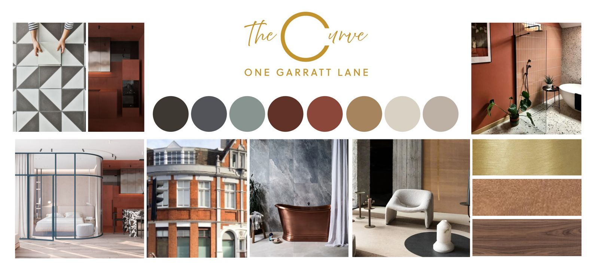

Planning application submitted, November 2026
A Victorian landmark on Wandsworth's corner, brought back to life.
We're restoring One Garratt Lane, a red-brick building of around 1896 in the Wandsworth Town Conservation Area, as The Curve: eleven boutique serviced apartments with the character of the original building and the comfort of a modern hotel.
- i.Building boughtWanbridge Ltd bought One Garratt Lane in October 2025.
- ii.Planning submittedChange of use to serviced apartments, with Wandsworth Council now.
- iii.RestorationAbout 10 to 12 months on site once permission is granted.
- iv.OpeningDate to be confirmed after the planning decision.
Heritage
Built around 1896, and still turning heads on the corner.
One Garratt Lane was built for the Royal Standard Benefit Society, which offered an early form of health insurance to working families from 1828 until 1953. Its architects gave it red brick with stone banding, a Dutch-style gable with a finial, an arched entrance porch with a central roundel, and the sweeping curved frontage that gives The Curve its name.
The building came through the First World War when its neighbour at No. 73 did not. In the 1920s the two were joined as a branch of Midland Bank, and HSBC carried on the banking tradition until 2024. It has stood empty since.
Today it sits in the Wandsworth Town Conservation Area, a few doors from the Grade II listed Spread Eagle pub, and it's recognised as making a positive contribution to the street. Our job is to look after that.
Background: the corner of Wandsworth High Street and Garratt Lane, about 1896 to 1910.
- c. 1896Built as offices for the Royal Standard Benefit Society
- 1914 to 1918Survives the First World War; No. 73 next door does not
- 1920sJoined with a new No. 73 as a Midland Bank branch
- HSBC yearsOffices for the HSBC branch next door
- 2025Bought by Wanbridge Ltd to restore and reopen
- 2026Planning application submitted to Wandsworth Council
The plans
Restore, don't rebuild.
There's no extension and no change to the building's height or shape. The work is about repairing what's there, opening the door to everyone, and hiding the modern kit out of sight.
Careful repair
The brickwork, stone dressings, gable, porch and cornice cleaned gently, with damaged bricks matched and repointing in lime mortar.
Timber, not plastic
The original windows renovated rather than replaced, with no uPVC. Slim acoustic glazing keeps the busy junction outside.
A matching pair of doors
The left-hand arch of the porch becomes a new step-free entrance with a platform lift, its timber door matching the original so the two arches read as a pair.
Nothing on the skyline
Heat pumps, solar panels and a green roof sit on the flat roof behind the mansard, so the roofline seen from the street is unchanged.
Character kept
The tall ground-floor windows above their brick stallrisers are renovated, with no roller shutters and restrained signage.
Built to protect
Sprinklers throughout, a raised ground floor for flood resilience, and remote monitoring around the clock.
Sustainability
A Victorian building, run on clean energy.
The greenest building is often the one that's already standing. Reusing One Garratt Lane keeps the carbon locked in its bricks, and the refurbishment is designed to cut the energy it uses today.
The refurbishment is being assessed under BREEAM UK Refurbishment and Fit-out by a licensed assessor. The pre-assessment scores 86.1%, above the 85% needed for Outstanding, the highest rating there is. Excellent is the minimum we'll accept.
- 100%Management
- 100%Waste
- 100%Pollution
- 100%Transport
- 100%Land use and ecology
Share of credits targeted in each category, from the pre-assessment (November 2026).
Air source heat pumps
Heat pumps on the roof provide most of the heating and hot water, using a natural refrigerant with very low global warming potential. A small ultra-low NOx boiler is kept for back-up only.
Solar on a green roof
A 4 to 6 kWp solar array on low frames above a living roof, expected to generate around 3,500 to 5,000 kWh of clean electricity a year.
Less energy wasted
Better insulation where the historic fabric allows, slim acoustic glazing, LED lighting with smart controls, and sub-metering so every unit's energy and water use can be tracked.
A living roof
A sedum or wildflower roof that slows rainwater run-off into the sewers, insulates the building, supports wildlife and helps the heat pumps work efficiently.
Every drop counts
Water-efficient taps, showers and toilets, a water meter on the mains and leak detection to catch problems early.
Fresh, quiet air
Fresh air drawn in at roof level, away from traffic and filtered, with thermal modelling to keep rooms comfortable in hotter summers.
The apartments
Eleven boutique apartments, each with its own character.
Every apartment has its own shower room and kitchenette, and an interior designed around the period features of the building. Check in is by smart code, with support on hand 24 hours a day.
Studio-suites
Our largest apartments, with a separate lounge and dining area. Three sit in the mansard roof, under the dormers.
Studios
Generous open-plan rooms behind the tall Victorian windows, ideal for a city break or a working week.
Micro-studios
Compact and cleverly planned, for guests who want a stylish base in Wandsworth at a sensible price.
Interiors
Warm, rich and rooted in the building.
The interior concept by our interior designer, Louise Wynn, takes its colours from the brick, iron and brass of the original building: deep oxblood and terracotta, antique brass, walnut, soft linen and stone, with copper and terrazzo for the bathrooms. The cast-iron staircase in the background is staying.

Mood board for illustration. Final interiors may differ.
Wandsworth Town
Good for the guest, good for the high street.
The Curve sits at the heart of Wandsworth Town, with shops, restaurants and the river on the doorstep and fast trains to Waterloo.
- A corner back in useA prominent building that's been empty since the bank left will be lit, cared for and busy again.
- Local jobsAround six full-time roles, including local housekeeping and maintenance.
- Car-freeAbout 8 minutes' walk to Wandsworth Town station, with bus stops outside and secure cycle storage.
- Spending locallyGuests will eat, drink and shop in Wandsworth, morning to evening.
Stay in touch
Be the first to stay at The Curve.
Register your interest for opening news, or get in touch about the project. We're happy to talk to neighbours, local businesses and the press.
info@wanbridge.co.ukThe planning application is with the London Borough of Wandsworth. Once it has a reference number, you can view the plans and comment on the Council's planning website.